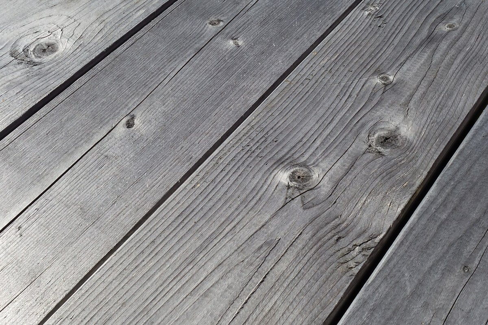

五つの字
五つの字
お店について確認できているのは、所在地とInstagramのアカウントだけです。
このページの「しん」の字の説明は、制作側の連想です。お店の実際の由来・考え・メニューとは関係がありません。
確認できていること
- 店名は「SHINcafe」、業種はカフェ
- 所在地は香川県高松市牟礼町大町978-30
- 電話番号はなし。連絡はInstagramから
- 営業時間・定休日・メニュー・価格・ご予約・駐車場は準備中

想像してみる
五つの「しん」
- 新
新(あたらしい)
新しい、の「しん」。空の写真は、はじまりのイメージで選びました。
- 心
心(こころ)
心、の「しん」。暗がりに灯る光を、まんなかの意味で重ねました。
- 真
真(まこと)
真、の「しん」。真上から見たカップで「真上」の「真」を。
- 芯
芯(しん)
芯、の「しん」。葉の中央を走る太い筋を、芯に見立てました。
- 信
信(しん)
信、の「しん」。手紙や本のような、便りのイメージです。